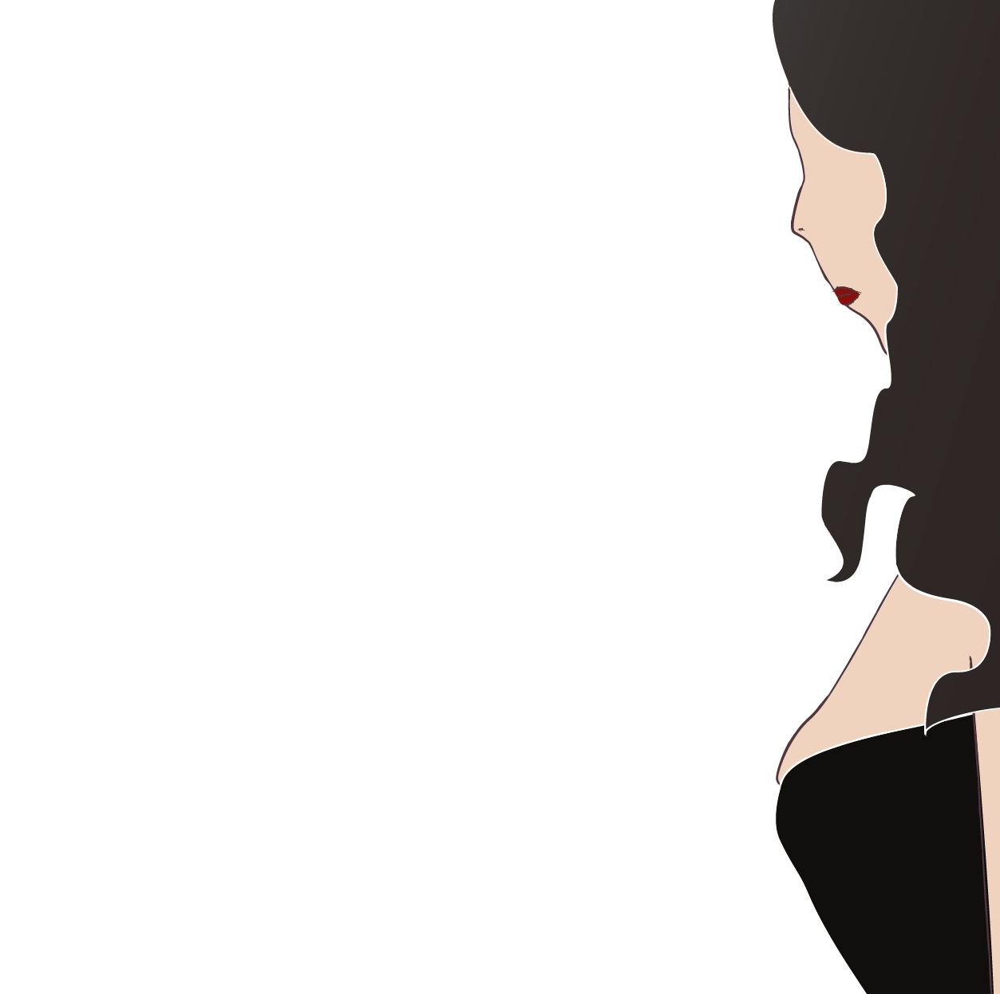
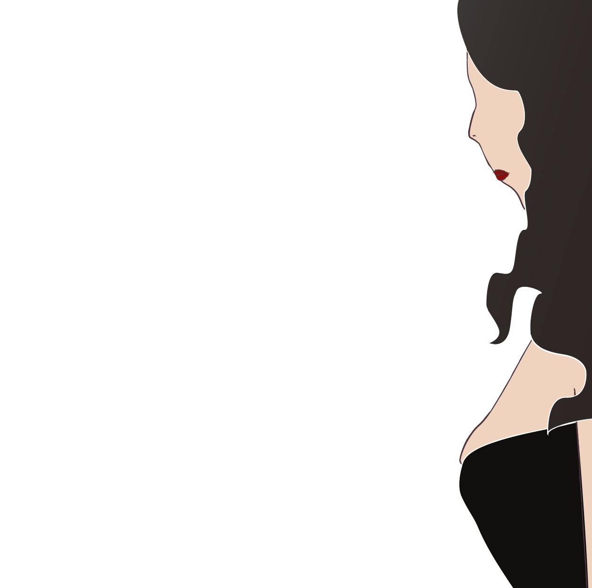

那一夜，我成為酒店公關
算了，先借你一些，可不能讓客人覺得你菜，跟我來。」
貌似是一群下班後來應酬的上班族，算是我比較擅長應付的類型。 運氣很好的，很快就選到我了，我鬆了一口氣，至少今天不用空轉一兩個小時。
我朝著一名客人走去，一邊觀察他的衣著打扮。
在心中慢慢盤算好角色設定，準備我的起手式。
出乎我意料的，是客人先開口的，看來他比我想像中熟練。
「哎呀哈哈，你觀察力真好...」

誰又何嘗不是為了生活?

隨著聊天進行，我似乎找回了平常的狀態，漸入佳境
幾輪喝酒遊戲後，我很快注意到，客人開始不安分了起來，
先是視線，接著是手，在胸部周圍游移。
在廁所裡面，我看著鏡中的自己
雖然也不是第一次遇到這種事了，但每次都要用笑容掩蓋其他不能表現出來的情緒、重複著固定的步驟來應付，這些露骨的意圖
習慣就像是一種讓人慢慢窒息的毒藥，我早就已經分不清楚這是一種自我保護，還是自我欺騙？
漸漸地只剩下「啊啊，又來了啊」這種輕描淡寫的感覺。
酒店上班的工作內容不外乎是陪客人聊天、服務桌面或幫客人點歌，客人多少也會希望有一些肢體碰觸，但是每個公關能接受的肢體接觸界線有所不同，若沒有尊重公關的意願，一不小心就會變成性騷擾。
回到桌邊時，客人已經不在座位上了。 正當我感到納悶時，身兼幹部的經紀人招手示意她過去，簡單打個招呼後，便進入正題。
經紀人：「剛剛跟你聊天的客人突然說想要帶妳出場，我知道這是有點不照規則啦，不過妳OK吧。」
該來的還是要來。
我：「我今天只能純出喔，我生理期，客人知道嗎？」
經紀人：「可，客人感覺蠻喜歡妳的，行政也說妳今天表現不錯，該給的不會少。」
 

正當我接受自己的命運，準備離開去門口找客人時，經紀人又叫住了我。
經紀人：「......」
沉默片刻後，他說：「我想不用我提醒吧，保護自己，你知道哪些地方不能去。」
我聳聳肩，露出苦笑。
經紀人：「結束再打給我吧，我去接你。」
在酒店裡，客人帶公關出場稱為「框出」，分為「純出」與「S出」兩種。
「純出」是單純和客人離開酒店，單獨到公共場所相處，像是去公園散步或吃宵夜，純出是不能拒絕的
而「S出」則是指離開酒店，到其他場所進行性交易*，公關可以憑藉自己的意願，決定是否接受S。
（*註：根據目前《社會秩序維護法》，「性交易」若在地方政府所劃設的專區內屬於合法行為，然而現在並沒有任何地方劃設專區，因此陷入「形式合法，實質非法」的窘境。另外，根據國內現行法規，性交易已非刑法所罰，而是受到行政處罰。
跟著客人出場，一開始都還很好。吃宵夜、逛東區、散步，
我繼續扮演著我的角色，
上演重複的廉價喜劇。
我：「哥哥，人家沒有做s啦！」
「都買你出場了，怎麼他媽的會沒有。」
「哥哥，出場有分純的跟s的啊，剛剛行政應該有說......
「什麼？這跟說好的不一樣啊，你要多少，錢給你！」
「這不是錢的問題......」
「我再加3000給妳，怎麼樣？不用被任何人抽成，就是我給你的。」
我的內心掙扎著，這個數目，可以讓我多休兩天班。
深深吸了一口氣後，我下定決心，慢慢地開口：
「我......」
手機的電話響起，是經紀人打來的。
我猶豫了一下，接起了電話。
「喂。」
聽到電話那頭熟悉的聲音，
我沉默了兩秒才回答：
「嗨......」
「......」
兩人陷入短暫的沉默，對比
經紀人打破沉默：「你要不要吃宵夜？」
「嗯。」
他沒有詢問我任何事情，
也沒有確認我今天到底做了什麼，
他從不質疑公關們的選擇、給予批判或建議，
只是在需要的時候，給她們需要的幫助。
走出深夜的永和豆漿，我們走回車上
，經紀人點起香菸抽著。
我想拿出她的電子菸，卻找了一陣子都找不到，於是經紀人將手上的菸遞給她，我接過後吸了一大口，彷彿在這樣缺氧的感覺下，比較能說出想講的話。
「今天...很不一樣。
在需要做出選擇的那個當下，心中突然多出了一個新的聲音，那是從未出現的新角色，所以我對她感到陌生，但她卻意外給我安心的感覺。
原本內心的聲音就夠多了...
有一個常常哭哭啼啼的年輕女孩Ｔ，她說她總是被欺負，因此她脆弱、膽小、別無選擇，整個世界都在找機會傷害她，但她明明沒做錯什麼吧？
另一個人Ｒ，和Ｔ則像是死對頭，Ｒ脾氣很直，每當Ｔ自怨自艾的時候，她會忍不住地破口大罵，她覺得Ｔ只是想藉由佯裝被害者來逃避自己的無能和可悲。恩，毫不留情。
還有一個，年紀沒有很大，但讓人以為她歷經風霜的Ｓ，與其說她成熟，不如說她世故吧。 她說，這世界本來就是靠著利益交換才得以成立的，所以認清規則，就不用悲傷、不用氣憤、更用不著思考，就這樣度過餘生，追求當下的快感就好。
以前，Ｔ、Ｒ、Ｓ都會在每一個選擇的重要時刻，嘗試分出勝負；但今天，我發現他們突然吵不下去了，因為剛剛說的新聲音Ｍ出現了。
Ｍ，她很少說話，這可能也是我直到今天才注意到她的原因之一。她很冷靜，但不是無情，她好像知道Ｔ的脆弱、Ｒ的批判、Ｓ的世故，都是有原因的，她們三個都是為了保護她們所賴以生存的這個地方，也就是我，才會擁有這麼極端的情緒的。
我很感謝今天感受到Ｍ的存在，不過不確定這樣難得的平和能保持多久？」
經紀人聽完，將抽到一半的菸蒂扔出窗外。
他說：

度過了蒻紅的一天，此時此刻，
你的心情是什麼？
腦海中浮現什麼想法呢？
01.在打開包廂門之前，你想像中的酒店是什麼樣子？
和蒻紅一樣的酒店公關們一天的生活又是如何？
是夜夜笙歌的歡快場景？
客人和公關之間的距離沒有一點空隙，
公關們喝著酒、陪客人聊天，
輕鬆就能擁有月入十萬以上的高額薪水，
日常生活則脫離不了與客人複雜的交往（甚或是性）關係。
不是的。
這些印象可能來自於單一的社會事件，
或是片面視角的詮釋，
而酒店公關們的故事其實並不是一時半刻間就能夠說明清楚的。
02.大部分的公關上班日的一天生活是這樣的...
酒店公關的一天
- 下午起床，梳洗後準備出門，或是到美容院花錢請人做妝髮
- 接著搭大眾交通運輸或計程車前往上班的酒店
- 晚上7:00，打卡上班
- 依照規定須工作至少滿七小時，有時候會為了多做點業績而加班幾小時
- 下班後就回到家裡休息
平均而言，公關一天的工作時數大約是十個小時，
但這並不包含下班後為了和客人經營穩定關係，
必須回覆客人訊息或是和客人額外約會等所佔用的時間。
其實每天規律的生活和上班族並沒有太大差異，
只是工作時間和內容與一般上班族不太一樣。
03.在酒店，需面對更高的風險、更多的潛規則，
以及無數必須自我選擇與調適的課題
03-1.被高度性化、高風險的服務業
酒店公關的主要工作就是營造氣氛、和客人維持親密的互動，
因此無可避免地必須和客人敬酒、喝酒，而互動過程中也會遇
到不少客人想要觸碰自己身體的情況，滿足客人的情慾需求也
是屬於工作內容的一部分。
除了飲酒過量導致對身心的負面影響，以及面對各種難以預測
情況時的攻防備戰以外，「無底薪」、「缺乏勞健保保障」也
都是讓酒店公關的工作充滿風險的原因之一。
03-2.規則與潛規則
排班、請假、薪資、服裝等等，在經紀、幹部、酒店店家、行政不
同的角色，對公關有著不同的規定與約束力，而公關除了必須面對
有形的規則，更多的是不被公開在陽光下的潛規則：
- 如何和客人互動？
- 如何藉由敏銳的觀察與事前的資料蒐集，和客人創造更多的連結？
- 如何在危機時刻中把持自身原則？或尋求自保？
少了對任何一條潛規則的認識，酒店公關就更有可能讓自己曝露在
更高的危險中。
03-3.被動的選擇：在有限的模糊裡做決定
公關們在現實生活的束縛與酒店文化裡的種種限制之下，很多
時候看似是沒有選擇的，但其實她們所擁有的僅是「被動」的
選擇權。
關於「以什麼技能展現個人魅力」、「自己可以接受觸碰的身
體界線為何」、「做S之於自己是否是等價的交換」等等，一
切的問題都沒有正確的答案，公關只能在有限的模糊空間中，
做出自己的選擇，又或者是接受自己的選擇。
04.在故事裡沒說到的是，
公關們下班之後的生活又是什麼模樣？
下班之後
每一夜，為工作而注入身體裡的大量酒精；每一次談話、
服務，為滿足不同客人的需求，展現合宜的舉止、和客人
保持親暱的互動、為客人排解負面情緒......
長久以來累積的生理與情緒勞動壓力，讓公關們必須用下
班後的短暫時光，來修復夜晚用盡力氣所耗費的能量。
下班之後
多數公關是因為面臨沈重的經濟壓力而選擇入行，因此在
下班過後仍得繼續著一般人的生活節奏，到學校快速轉變
回樸素的大學生，低調地在課堂上補眠，或者是回到家中
變回能幹的媽媽，獨自照料孩子們。
為了生活，他們必須扮演好兩種身份。
大多時候，公關的身份並不能曝光，否則將要面對的是外
界加諸於己的不諒解與負面評價，而基於這樣的價值觀所
衍生的問題是——因為工作難以被社會接受，因此她們的
工作權益也缺乏保障。
下班之後
於是，有一群人為此默默地耕耘著，
透過講座、展演活動，分享酒店職場的資訊，不斷地創造
和社會對話的機會，希望消除社會對酒店的刻板印象。
而2020年底「台北市娛樂公關經紀職業工會」也在各界的
努力、合作下成立，期望能為公關爭取到應有的工作權益。
或許，她們需要的不是對自己艱難處境的同情，
也不是消滅酒店公關相關工作的主張，
可能只是對於這份專業的尊重，
以及能夠讓她們像其他人一樣安心工作的環境。
製作團隊
新聞企劃｜洪若庭、鄒凱宇、劉姿劭
採訪文字｜洪若庭、鄒凱宇、劉姿劭
網頁設計與前端工程｜洪若庭、鄒凱宇、劉姿劭
插畫｜洪若庭、鄒凱宇、劉姿劭
指導教授｜國立臺灣大學 新聞研究所 謝吉隆副教授
(依姓氏筆畫排列)
特別感謝
酒與妹仔的日常
參考資料來源
酒與妹仔的日常 Diary of the Hostess
殺死那個酒店小姐
疫情悲歌1》「防疫奇蹟」背後被遺忘的酒店小姐：被迫提早出社會，貧困女子道出「一技之長」最大諷刺
開撩紀實—夜晚微笑背後的勞動與危險—公關與陪侍的法律風險｜許珈熒
團結的基層性工作者，是否永遠不被擊潰？｜端傳媒 Initium Media